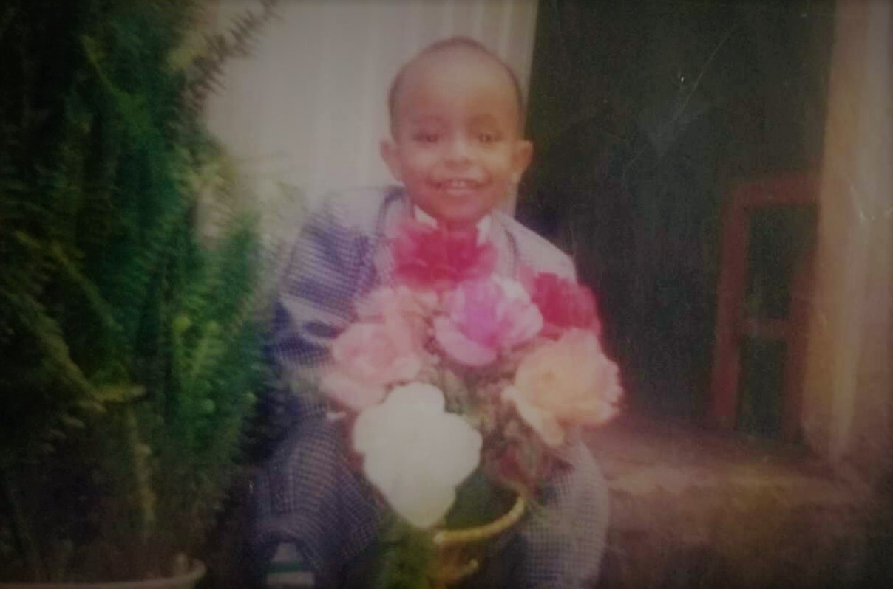

Semere Talegngeta
My web
- Follow me at:



I was born in August-23-2000 G.C around Saris, Addis Ababa. My father’s name is Talegngeta Fereja and he is an owner for construction workshop by now. My mother’s name is Tadelech Desta and she is housewife. I also have three brothers and one sister. I am elder child in our family and as an elder everybody advices me to help my brothers and sister in order to be successful and I like helping them.
When I was 4 years old, my family sent me to Addis Beza Community(ABC) school. Since childhood, I was curious of knowing new things and that potential helps me to be a good student. The school compound was located near Saris and typically I was learning there because it was near to our home. All things in the school were simple as kids, learning for some period of hours, eating a lunch, sleeping on bed time, playing games with friends tirelessly. Those moments of life were so cherishing and happiness.
I have completed my kindergarten education in the year 2006 and I become grade 1 student in 2007. It was levelled grade as compared to previous nursery, and there are more subjects to learn. but Thanks to my parents, since that time they help me to study and become a clever student. My father told me that every day I was asking him a lot of question that I got from school.
.jpg "My graduation from kindergarten.")
I have completed my education in ABC school up to grade 2. Then me and my family left Saris city and settled in Kaliti. We are there still now. I started learning in a new school called Akaki Adventist or by acronym AAS. Some also named it Misson school. It was a huge school compound that I have ever seen before. From grade 3 up to 12th graduation I was a student there. I was kid when I arrived, and become young and matured student. When I was a fresh AAS student (grade 3), Learning method was totally different from where I was before. Things are strict and cold for fresh one’s. nobody was there to help and get a fresh student about information. It was a challenging year of that time, but I successfully passed.
Though adapting with my new school and achieving good results, I recognized by the environment there. I have been awarded many certificates to my success in academics and I was very interested in getting more certificates. So every year I tried to get my best version self in regarding to education, through my good sense of curiosity helped me to be great student. I have completed grade 8 and joined the secondary school. In the secondary school, life becomes more complex than that in elementary. But I spent most of my time in studying because of that I were with the atmosphere of the education. When I was grade 10, there was a huge expected thing from me. that is accomplishing the National exam with high score. And it was done!
For myself up to this era of life, I want to say it is the first chapter of a life as a student. not far, I started my second era of life or life after grade 10. The preparatory school was somehow funny, exiting, dense in the volume of subjects, but once life taught me how to be critic so no matter things are there I was struggling to achieve to it’s fruit. And finally, the era of school life ended after 12th graduation in mission(AAS) school which is memorable through life time!